Descriptive statistics summarize observed data; inferential statistics use a sampling design or model to make statements beyond those observations. The distinction matters even before choosing a plot.
A population is the set of units or outcomes the analysis concerns; a sample is the observed subset. In simple random sampling without replacement, all subsets of the chosen size are equally likely. Probability sampling more generally can use unequal, known inclusion probabilities. Non-probability selection does not provide that design-based foundation. Random selection alone does not ensure that a realized sample is representative or remove coverage, nonresponse and measurement problems. See Statistics Canada’s sampling guide.
A variable records a characteristic of an observational unit. Its type concerns the meaning of the values, not simply how they are stored:
| Kind | Property | Example |
|---|---|---|
| Quantitative, continuous | Modeled on a continuous numeric scale; recording precision may round the observations. | Height |
| Quantitative, discrete | A finite or countable set of numeric values; counts are a common example. | Number of people in a room |
| Categorical, nominal | Categories without an intrinsic ordering; numeric codes do not make their differences meaningful. | Nationality |
| Categorical, ordinal | Ordered categories without an assumed equal numeric spacing. | Employment grades |
A statistic is calculated from a sample; a parameter describes the population or model of interest. For a particular sample, sampling error is the difference between an estimator and the corresponding population quantity. It is not a synonym for all measurement errors, selection bias or forecast errors.
The traffic example below describes 31 consecutive days. Those days are not automatically an independent random sample of all future days. Generalizing forecast performance requires attention to time dependence, the validation design and possible changes in the generating process. A significance test alone does not establish representativeness.
A frequency distribution records counts for values, categories or numeric intervals; relative frequencies divide by the declared total. A histogram groups quantitative observations, including discrete counts, into ordered numeric bins. A categorical bar chart compares categories. For a histogram, specify the bin edges and endpoint convention: the bin count alone is insufficient. For unequal widths, use count/width or relative frequency/width if bar area is to represent frequency or probability. Changing bins does not change the underlying observations.
The deck’s ago1 column contains 31 observations, one daily vehicle count for August. These are discrete quantitative data, even though a histogram groups them into intervals:
5012 4948 5077 4960 5010 4170 2916 4442 4301 4931 4533 4438 3707 2794 3148 4086 4355 4272 4389 3546 2827 4505 4598 4646 4406 4586 3801 2845 4919 4663 5167A reproducible histogram requires both a bin count and edges. NumPy’s histogram documentation uses the observed minimum and maximum by default. SciPy’s relfreq documentation instead expands each end by (max − min) / [2(k − 1)] for k bins. These defaults need not produce the same counts.
With ten expanded-range bins, the counts are 4, 1, 0, 2, 1, 2, 8, 5, 6, 2. With ten min–max bins they are 4, 1, 0, 2, 1, 2, 7, 6, 1, 7. Both total 31. Comparing the slide’s columns with these calculations shows that its counts match the min–max bins, while its proportions match expanded-range bins; its displayed interval labels are approximate. The old chapter’s purported correction instead summed to 32. The table below uses one explicit convention for every column.
The same 31 daily counts drive the bars, table and summary. Change the number of bins or range convention; the observations and their mean stay fixed.
31 observations; 10 bins; SciPy-style expanded range. Mean = 4258.00; sample standard deviation (n−1) = 720.15. Included = 31; excluded = 0.
| Interval | Days | Relative | Cumulative |
|---|---|---|---|
| [2662.17, 2925.83) | 4 | 0.1290 | 0.1290 |
| [2925.83, 3189.5) | 1 | 0.0323 | 0.1613 |
| [3189.5, 3453.17) | 0 | 0.0000 | 0.1613 |
| [3453.17, 3716.83) | 2 | 0.0645 | 0.2258 |
| [3716.83, 3980.5) | 1 | 0.0323 | 0.2581 |
| [3980.5, 4244.17) | 2 | 0.0645 | 0.3226 |
| [4244.17, 4507.83) | 8 | 0.2581 | 0.5806 |
| [4507.83, 4771.5) | 5 | 0.1613 | 0.7419 |
| [4771.5, 5035.17) | 6 | 0.1935 | 0.9355 |
| [5035.17, 5298.83] | 2 | 0.0645 | 1.0000 |
| Included total | 31 | 1.0000 | 1.0000 |
Intervals include the left endpoint and exclude the right, except the final interval, which includes both. Displayed edges are rounded to two decimals; assignment uses full-precision edges. Proportions are rounded only for display and may not sum to exactly 1 after rounding.
import numpy as np
from scipy import stats
import matplotlib.pyplot as plt
data = np.array([5012, 4948, 5077, 4960, 5010, 4170, 2916, 4442, 4301, 4931, 4533, 4438, 3707, 2794, 3148, 4086, 4355, 4272, 4389, 3546, 2827, 4505, 4598, 4646, 4406, 4586, 3801, 2845, 4919, 4663, 5167])
k = 10
pad = (data.max() - data.min()) / (2 * (k - 1))
edges = np.linspace(data.min() - pad, data.max() + pad, k + 1)
counts, _ = np.histogram(data, bins=edges)
relative = counts / data.size
cumulative = np.cumsum(counts) / data.size
print(counts) # [4 1 0 2 1 2 8 5 6 2]
print(counts.sum()) # 31
res = stats.relfreq(data, numbins=k,
defaultreallimits=(edges[0], edges[-1]))
assert np.allclose(relative, res.frequency)
plt.hist(data, bins=edges, color='#1546B8', edgecolor='#F3EFE3')
plt.xlabel('Vehicles per day'); plt.ylabel('Days')
plt.show()
# For the min–max convention, use edges = np.linspace(data.min(), data.max(), k + 1).
# Recompute counts, proportions and the plot together after changing the edges.Relative frequency is count / n; frequency density additionally divides by bin width. With unequal bin widths, plotting raw counts as heights makes the bar areas misleading. See the NIST histogram guide for normalization choices. Neither a histogram nor its binning establishes independence or a distributional model.
Mean, median and mode summarize different aspects of location. For the numerical samples here, the arithmetic mean is x̄ = Σxᵢ/n; the median is the middle sorted value for odd n and the average of the two middle values for even n. Modes are values attaining the greatest observed frequency; there can be ties. A density’s peak and a histogram’s tallest bin are not the same object as a sample mode. See NIST’s location guide.
| Sample | Mean | Median | Mode |
|---|---|---|---|
| Motorway speeds (km/h) | 137.14 | 132 | 124 |
| Hotel quotes | 293.83 | 283 | 274 |
The seven speeds are 151, 124, 132, 170, 146, 124, 113 km/h: their sum is 960, so x̄ = 960/7 = 137.142857…; the sorted values are 113, 124, 124, 132, 146, 151, 170. The six hotel quotes are 366, 327, 274, 292, 274, 230: the two central sorted values are 274 and 292, giving median 283.
Python: np.mean(x), np.median(x), and stats.mode(x). SciPy mode returns only one value when modes tie; use counts to retain all modes, as in the reproduction below. Italian Excel names include MEDIA, MEDIANA, and MODA.SNGL/MODA.MULT for single/multiple modes (the slides use legacy MODA); see the Microsoft function reference.
Replacing one value x by x + Δ changes the sample mean by exactly Δ/n. The median depends on ranks and is less sensitive to moving an already extreme observation farther out, but it can change when observations cross the middle or enough values are replaced. Section 6 demonstrates this explicitly. Choose a summary for the question: expected total workload and typical daily workload need not have the same answer. Extreme but valid observations are not automatically errors.
For finite data, symmetry about c means that reflection x → 2c−x preserves values and multiplicities. For a distribution, the reflected random variable must have the same distribution; its mean need not exist. Equality of mean, median and mode is neither a definition nor a sufficient test of symmetry. A symmetric distribution or sample may also have modes away from its center.
Transform an evenly spaced grid of 121 values using a. This is a deterministic illustration, not measured data or a fitted distribution. The parameter a is not a standardized skewness coefficient. The median stays at 100 by construction.
Transformation a = 0.00; mean = 100; median = 100. All 121 observed values are distinct: there is no unique sample mode. Highest-count bins: 1, 2, 4, 6, 8, 9, 11, 13, 14 (count 9 each). At a = 0, the evenly spaced sample is symmetric, not Gaussian.
| Bin | Numeric interval | Count | Highest count? |
|---|---|---|---|
| 1 | [40, 48.57) | 9 | Yes |
| 2 | [48.57, 57.14) | 9 | Yes |
| 3 | [57.14, 65.71) | 8 | No |
| 4 | [65.71, 74.29) | 9 | Yes |
| 5 | [74.29, 82.86) | 8 | No |
| 6 | [82.86, 91.43) | 9 | Yes |
| 7 | [91.43, 100) | 8 | No |
| 8 | [100, 108.57) | 9 | Yes |
| 9 | [108.57, 117.14) | 9 | Yes |
| 10 | [117.14, 125.71) | 8 | No |
| 11 | [125.71, 134.29) | 9 | Yes |
| 12 | [134.29, 142.86) | 8 | No |
| 13 | [142.86, 151.43) | 9 | Yes |
| 14 | [151.43, 160] | 9 | Yes |
| Total | All generated observations | 121 | None discarded |
All original observations have frequency one. A highest-count histogram interval is a binning-dependent description, not a unique observed mode; all ties are shown. At a = 0, the grid is evenly spaced and small bin-count differences are discretization effects. Interval endpoints are rounded only for display.
import numpy as np
def transformed(a):
u = (np.arange(121) - 60) / 60
return 100 + 60*u if a == 0 else 100 + 60*np.expm1(a*u)/a
x = transformed(1.5) # deterministic grid, not a random sample
edges = np.linspace(x.min(), x.max(), 15)
counts, _ = np.histogram(x, bins=edges)
print(x.mean(), np.median(x))
print(counts)
print(np.flatnonzero(counts == counts.max()) + 1) # ALL highest-count bins
assert len(np.unique(x)) == 121 # no unique sample mode
# The central grid point u=0 maps to x=100 for every a.Quantiles describe positions in an ordered distribution; percentiles use p/100, and Q1, Q2, Q3 correspond to p = 0.25, 0.5, 0.75. With the usual numerical median convention, Q2 is the median. Ties and finite samples prevent a guarantee that exactly 25% or 75% of observations are strictly below a reported quartile. Sample quantiles also depend on the selected estimator.
One population convention is Q(p) = inf{x: F(x) ≥ p} for 0 < p < 1. Interpolated sample estimators need not equal that inverse applied to the empirical CDF. NumPy’s linear method uses h = (n−1)p on the zero-based sorted array and interpolates between floor(h) and ceil(h). The slides instead use medians of halves in the worked examples; for seven values the middle observation is excluded from both halves.
| Convention | Q1 | Median | Q3 | IQR |
|---|---|---|---|---|
| Slide: median of halves | 124 | 132 | 151 | 27 |
| Linear interpolation | 124 | 132 | 148.5 | 24.5 |
IQR = Q3 − Q1. The slide’s 151 − 124 = 27 is correct for its convention; the linear result is 148.5 − 124 = 24.5. Only the value 113 is strictly below Q1 = 124; the two observations equal to 124 are not “below” it. Likewise 151 is not strictly above Q3 = 151. This is why strict percentage claims are misleading with ties and seven observations.
np.quantile(x, [.25, .5, .75], method='linear')
pd.Series(x).quantile([.25, .5, .75], interpolation='linear')
stats.iqr(x, interpolation='linear') # 24.5 for these seven speedsThe IQR is a spread measure based on the central ranks, not squared distance from the mean. It is less sensitive to moving tail observations farther out, but it is not invariant under arbitrary data changes. Use the same quartile convention when calculating the fences in section 6.
Spread has several definitions. Range = max − min uses the extremes; IQR uses quartiles; variance averages squared deviations from a specified center. Their sensitivity and units differ. The slide’s separate range example has min 25 and max 203 km/h, hence range 178; the seven motorway speeds instead have range 170 − 113 = 57 km/h. Python np.ptp(x) or max(x)-min(x) calculates a range; range() does not.
Observed mean: x̄ = Σxᵢ / n
SS = Σ(xᵢ − x̄)²
Descriptive variance: vₙ = SS / n
Sample variance: s² = SS / (n−1), n > 1
If the true mean μ is known: Σ(xᵢ − μ)² / nvₙ describes the observed values; it does not require knowing a population mean. For an i.i.d. sample with finite population variance, s² is an unbiased estimator of that variance. If the true μ is known, the final formula is unbiased under that model, but it centers on μ, not on x̄. Do not label SS/n around the sample mean as the known-mean formula. These statements do not automatically apply to dependent traffic days or supply a valid confidence interval.
Standard deviation is the square root of the chosen variance. It has the original measurement units; variance has squared units. Taking the square root of an unbiased variance estimator does not generally produce an unbiased standard-deviation estimator.
| Speed (km/h) | xᵢ − x̄ (km/h) | (xᵢ − x̄)² (km/h)² |
|---|---|---|
| 151 | 13.86 | 192.02 |
| 124 | -13.14 | 172.73 |
| 132 | -5.14 | 26.45 |
| 170 | 32.86 | 1079.59 |
| 146 | 8.86 | 78.45 |
| 124 | -13.14 | 172.73 |
| 113 | -24.14 | 582.88 |
| Sum 960 | 0 exactly | 2304.86 |
SS = 16134/7 = 2304.857143…; calculations use the unrounded mean 960/7. Cells and totals are rounded independently for display. In particular, √(SS/7) = 18.145669…, which rounds to 18.15 km/h at two decimals; the slide prints 18.14.
| Divisor | Variance (km/h)² | SD (km/h) | CV percent |
|---|---|---|---|
| n = 7 | 329.265306 | 18.145669 | 13.231217 |
| n−1 = 6 | 384.142857 | 19.599563 | 14.291348 |
NumPy var and std default to ddof=0 (divisor n); use ddof=1 for n−1. pandas Series.std defaults to ddof=1. Defaults belong to individual functions, not to a library as a whole. Italian Excel uses VAR.P/DEV.ST.P for the n convention and VAR.C/DEV.ST.C for n−1.
For positive ratio-scale quantities with a meaningful zero and positive mean, CV percent = 100 × SD/x̄. Its relative-spread interpretation needs that scale: multiplying all observations by the same positive constant leaves it unchanged, but adding an offset generally changes it. A Celsius/Fahrenheit conversion is not a pure rescaling. CV is undefined at zero mean and unstable near zero; it is not a universally meaningful comparison of arbitrary variables. See the NIST CV guide.
SciPy stats.variation returns SD/mean, not a percentage, and defaults to ddof=0. It does not take the absolute value of the mean, so it can return a negative number without establishing a meaningful relative-spread interpretation. For the speeds, multiply by 100 to obtain 13.23% with ddof=0 or 14.29% with ddof=1. The slide’s 14.3% agrees with the latter after rounding; its plain stats.variation(npa) call would not reproduce that convention.
import numpy as np
import pandas as pd
from scipy import stats
x = np.array([151, 124, 132, 170, 146, 124, 113], dtype=float)
mean = x.mean()
ss = np.sum((x - mean)**2)
print("Mean, median:", mean, np.median(x))
values, counts = np.unique(x, return_counts=True)
print("All sample modes:", values[counts == counts.max()])
print("Linear quartiles:", np.quantile(x, [.25, .5, .75], method="linear"))
s = np.sort(x)
print("Median-of-halves quartiles:", np.median(s[:3]), np.median(s[4:]))
print("Sum of squared deviations:", ss)
for ddof in [0, 1]:
print("ddof, variance, SD, CV percent:", ddof,
np.var(x, ddof=ddof), np.std(x, ddof=ddof),
100 * stats.variation(x, ddof=ddof))
assert np.isclose(stats.variation(x), np.std(x, ddof=0)/mean)
assert np.isclose(pd.Series(x).std(), np.std(x, ddof=1))
assert np.isclose(stats.iqr(x), 24.5)
# Same numeric array, no missing values; defaults are function-specific.For the 31 August counts, pd.Series(data).describe() reports mean 4258, sample SD 720.147901, min 2794, linear quartiles 3943.5 / 4438 / 4791, and max 5167. These summarize the recorded days; the output does not prove an i.i.d. sampling design. The frequency and box widgets use this same data source.
A box-plot summarizes ordered quantitative data using a box from Q1 to Q3 and a median line. Specify its convention: a min–max plot extends its whiskers to the extremes; the 1.5·IQR variant used here ends them at the most extreme observations still inside the fences. Whiskers are observed values; fences are calculated thresholds. Neither is a confidence interval.
IQR = Q3 − Q1
Lower fence = Q1 − 1.5 × IQR
Upper fence = Q3 + 1.5 × IQR
Flag x only if x < lower fence or x > upper fence.The slide 30 data are 62, 64, 68, 70, 70, 74, 74, 76, 76, 78, 78, 80 km/h. Taking the median of each six-value half gives Q1 = (68 + 70)/2 = 69 and Q3 = (76 + 78)/2 = 77. Do not assume every library reproduces those quartiles: NumPy’s linear method interpolates at index (n−1)p and gives 69.5 and 76.5 for the same sample. Both conventions below have median 74, whiskers 62 and 80, and no flagged values.
| Convention | Q1 | Median | Q3 | IQR | Fences |
|---|---|---|---|---|---|
| Slide: median of halves | 69 | 74 | 77 | 8 | 57 / 89 |
| Linear interpolation | 69.5 | 74 | 76.5 | 7 | 59 / 87 |
import numpy as np
import matplotlib.pyplot as plt
speeds = np.array([62, 64, 68, 70, 70, 74, 74, 76, 76, 78, 78, 80])
s = np.sort(speeds)
# Reproduce this slide's median-of-halves convention explicitly.
q1, med, q3 = np.median(s[:6]), np.median(s), np.median(s[6:])
iqr = q3 - q1
inside = s[(s >= q1 - 1.5 * iqr) & (s <= q3 + 1.5 * iqr)]
fliers = s[(s < q1 - 1.5 * iqr) | (s > q3 + 1.5 * iqr)]
fig, ax = plt.subplots()
ax.bxp([dict(q1=q1, med=med, q3=q3,
whislo=inside.min(), whishi=inside.max(), fliers=fliers)],
orientation="horizontal")
ax.set_xlabel("Speed (km/h)")
print(q1, med, q3, iqr) # 69.0 74.0 77.0 8.0
print(np.quantile(s, [.25, .5, .75], method="linear"))
# [69.5 74. 76.5] — a different, explicitly chosen convention
plt.show()An extreme observation can be a recording error, a legitimate rare event, or evidence that the model or grouping needs attention. Check its provenance and context; correct established errors and document justified exclusions. Otherwise retain the observation and consider robust summaries or sensitivity analyses. NIST distinguishes flagging from accommodation and formal identification.
The slides’ “always within 3 SD” wording is not a guarantee: a normal distribution has unbounded tails. For a single observation under known normal parameters, P(|X−μ| > 3σ) ≈ 0.0027, not zero. Estimated sample z-scores are a different calculation. Neither 1.5·IQR nor a 1.5–2 SD cutoff licenses automatic removal; trimming valid tails changes the data distribution and can bias the analysis.
Use the same 31 August counts as section 2, replacing only day 31 (originally 5167, the largest count). The slider is a hypothetical remeasurement, not extra observed data. Quartiles use linear interpolation at zero-based index (n−1)p; the fences use Q1 − 1.5·IQR and Q3 + 1.5·IQR.
Day 31 = 5167 vehicles: inside the fences; not flagged. Mean = 4258 (originally 4258); median = 4438 (originally 4438). Q1 = 3943.5; Q3 = 4791. All quartiles and fences are recomputed; none is held fixed. Flagged observations are retained.
| Quantity | Vehicles/day |
|---|---|
| Q1 | 3943.5 |
| Median | 4438 |
| Q3 | 4791 |
| IQR | 847.5 |
| Lower fence | 2672.25 |
| Upper fence | 6062.25 |
| Lower whisker | 2794 |
| Upper whisker | 5167 |
| Mean | 4258 |
| Flagged observations | None |
Try 3000: Q1, median and Q3 change as the replaced observation moves through the ordered sample. Try 9000: those three values stay at their original levels while the mean rises. This is a property of these data and replacements, not a rule that sample quantiles never move.
A scatter-plot places each matched pair (xᵢ, yᵢ) at its two numeric coordinates; discrete counts are allowed too. It can reveal nonlinear structure, clusters and unusual observations, not just linear correlation. Association does not establish causation, and zero Pearson correlation does not establish independence.
The printed code independently sorts ago1 and set1. Matplotlib plots the supplied x/y positions; it does not repair the original pairing using pandas row labels. Sorting the columns separately can manufacture a positive trend. Sorting complete paired rows is safe because it changes only drawing order.
# Use this only if each existing row represents a meaningful matched unit.
# Otherwise first join on a verified observational key, not row position.
paired = df[['ago1', 'set1']].dropna() # Remove incomplete PAIRS together.
plt.scatter(paired['ago1'].to_numpy(), paired['set1'].to_numpy())
# No independent sort_values(); sorting whole rows is harmless.For counts from different months, matching equal day numbers is itself a design choice, not simultaneous observation. The available slide extraction does not establish a verified observational key for the two series. The illustration below therefore uses explicitly synthetic pairs, not an invented August–September correlation.
| Observation | x | y |
|---|---|---|
| A | 1 | 4 |
| B | 2 | 1 |
| C | 3 | 3 |
| D | 4 | 5 |
| E | 5 | 2 |
import numpy as np
import matplotlib.pyplot as plt
# Synthetic observations A–E; not the course's traffic data.
xy = np.array([[1, 4], [2, 1], [3, 3], [4, 5], [5, 2]])
fig, axes = plt.subplots(1, 2, sharex=True, sharey=True)
axes[0].scatter(xy[:, 0], xy[:, 1])
wrong = np.column_stack((np.sort(xy[:, 0]), np.sort(xy[:, 1])))
axes[1].scatter(wrong[:, 0], wrong[:, 1]) # Deliberately WRONG pairing
axes[0].set_title("Original pairs")
axes[1].set_title("Sorted separately: artificial association")
for ax in axes:
ax.set(xlim=(.5, 5.5), ylim=(.5, 5.5), xlabel="x", ylabel="y")
ax.set_aspect("equal")
print(np.corrcoef(xy.T)[0, 1]) # 0.0
print(np.corrcoef(wrong.T)[0, 1]) # 1.0 (up to floating-point rounding)
plt.show()A probability distribution assigns probabilities to events. An empirical distribution describes observed frequencies; a theoretical model proposes probabilities for a random variable X. A histogram summarizes a sample using chosen bins, but a distribution is not necessarily a smooth curve fitted to a histogram. Distinguish counts, probability masses, densities and cumulative probabilities.
For an absolutely continuous variable, a probability density function f is nonnegative and ∫ f(x) dx over the whole real line equals 1. P(a < X ≤ b) = ∫ₐᵇ f(x) dx. An individual height f(x) is not P(X = x): point probabilities are zero, and density heights can exceed 1. If x carries units, density carries inverse units, so its area is dimensionless. Nonnegative density does not mean that x must be positive.
For a discrete variable, the probability mass function p(x) = P(X = x) assigns mass to each possible value; these masses sum to 1. For a fair die, p(3) = 1/6. A discrete probability is a mass, not an area under a continuous density. The binomial example in section 11 uses a PMF.
F(x) = P(X ≤ x) applies to discrete and continuous variables. It is nondecreasing, takes values in [0, 1], and approaches 0 and 1 at the two infinite limits. For a < b, F(b) − F(a) = P(a < X ≤ b). For an absolutely continuous distribution, F(x) = ∫₋∞ˣ f(t) dt; endpoints of an interval have zero probability. A discrete CDF has jumps: for a fair die, F(3) = 3/6 and its jump at 3 is 1/6. It is a cumulative distribution function, not another density.
X ~ N(μ, σ²), with σ > 0, has mean μ and standard deviation σ. Its density is symmetric about μ and has support on the whole real line. Larger σ spreads the probability over a wider range and lowers the peak. This is a model to justify, not a default conclusion about any measured sample.
f(x) = exp(−(x−μ)² / (2σ²)) / (σ√(2π)), −∞ < x < ∞In SciPy norm, loc is μ and scale is σ, not σ². pdf evaluates density, cdf evaluates cumulative probability, and rvs generates random observations. These operations are different. Standardizing arbitrary data does not make their distribution normal.
| Quantity | Value | Interpretation |
|---|---|---|
| Density at zero: f(0) | 1.595769 | Height, not a probability; it can exceed 1. |
| Point probability: P(X = 0) | 0 | Zero for this absolutely continuous model. |
| CDF at a = −0.25 | 0.158655 | P(X ≤ −0.25) |
| CDF at b = 0.25 | 0.841345 | P(X ≤ 0.25) |
| Interval: P(a < X ≤ b) | 0.682689 | Area under f = F(b) − F(a). |
import numpy as np
import matplotlib.pyplot as plt
from scipy.stats import norm
x = np.linspace(-5, 5, 1001) # display window, not the full support
fig, axes = plt.subplots(1, 2)
for sigma in [0.5, 1, 2]:
axes[0].plot(x, norm.pdf(x, loc=0, scale=sigma), label=f"SD={sigma}")
axes[1].plot(x, norm.cdf(x, loc=0, scale=sigma), label=f"SD={sigma}")
for ax, name in zip(axes, ["Density f(x)", "Cumulative probability F(x)"]):
ax.set(xlabel="x", ylabel=name)
ax.legend()
fig.tight_layout()
plt.show()
# The paired teaching figure uses a narrower normal: SD=0.25.
rv = norm(loc=0, scale=0.25)
print("Density at zero:", rv.pdf(0)) # 1.595769..., not a probability
print("P(-0.25 < X <= 0.25):", rv.cdf(0.25) - rv.cdf(-0.25))
# For this continuous model, P(X=0)=0.The slides introduce Fitter and distfit. These examples retain their two separate synthetic samples: gamma with shape 2, location 1.5 and scale 2; then normal with mean 0 and SD 2. Both are seeded for reproduction, use 100 density-histogram bins and compare only norm, gamma and expon. The SciPy candidate name is norm, not normal. Parameters are fitted freely; the generating parameters are not supplied to the fitting tools.
For the settings below, SSE/RSS is Σⱼ(hⱼ − f̂(cⱼ))², comparing histogram density hⱼ with the fitted PDF at bin center cⱼ. Lower is better for that sample, binning and candidate set. This is not a p-value or an integrated probability; changing the bins can change the ranking. Candidate failure is checked explicitly. Neither sample represents the traffic observations elsewhere in the chapter.
import numpy as np
import matplotlib.pyplot as plt
from scipy import stats
from fitter import Fitter
rng = np.random.default_rng(20260908)
data = stats.gamma.rvs(2, loc=1.5, scale=2, size=10000, random_state=rng)
candidates = ["norm", "gamma", "expon"] # SciPy uses norm, not normal
f = Fitter(data, distributions=candidates, bins=100, density=True, verbose=False)
f.fit(max_workers=1, progress=False)
scores = f.df_errors["sumsquare_error"].reindex(candidates)
assert np.isfinite(scores.to_numpy()).all(), "At least one fit failed"
print(scores.sort_values())
print(f.get_best(method="sumsquare_error"))
name = scores.idxmin()
params = f.fitted_param[name] # shape parameters (if any), loc, scale
grid = np.linspace(data.min(), data.max(), 501)
fig, ax = plt.subplots()
ax.hist(data, bins=100, density=True, alpha=0.25)
ax.plot(grid, getattr(stats, name).pdf(grid, *params), label=name)
ax.set(xlabel="Synthetic value", ylabel="Density")
ax.legend()
plt.show()import numpy as np
import matplotlib.pyplot as plt
from distfit import distfit
rng = np.random.default_rng(20260908)
data = rng.normal(loc=0, scale=2, size=10000) # a separate synthetic sample
candidates = ["norm", "gamma", "expon"]
dfit = distfit(method="parametric", distr=candidates, stats="RSS", bins=100,
mhist="numpy", n_boots=None, n_jobs=1, verbose="warning")
dfit.fit_transform(data)
scores = dfit.summary.set_index("name")["score"].reindex(candidates).astype(float)
assert np.isfinite(scores.to_numpy()).all(), "At least one fit failed"
print(scores.sort_values())
print(dfit.model["name"], dfit.model["params"])
grid = np.linspace(data.min(), data.max(), 501)
fig, ax = plt.subplots()
ax.hist(data, bins=100, density=True, alpha=0.25)
ax.plot(grid, dfit.model["model"].pdf(grid), label=dfit.model["name"])
ax.set(xlabel="Synthetic value", ylabel="Density")
ax.legend()
plt.show()These snippets were executed with Fitter 1.8.0, distfit 2.0.2, NumPy 2.3.3, SciPy 1.16.2 and Matplotlib 3.10.7. The overlays deliberately show only the density fit, not automatically generated probability thresholds labelled as confidence intervals. In distfit, n_boots=None requests no bootstrap validation.
A winning candidate is not proof of the true family. In-sample fitting and model selection must be accounted for when calibrating goodness-of-fit tests; a standard known-parameter KS p-value is not automatically valid after estimating those parameters from the same sample. Parametric does not mean “always normal”, and nonparametric does not mean “assumption-free”. Choose a test for the question and sampling design, including pairing and dependence: see section 12 and the normality caveats in section 13. A density-fitting leaderboard alone does not authorize a test.
The second deck opens with the problem statement of the entire part: how to collect only a limited number of data, a sample, and through their analysis reach general conclusions which can be extended to the whole population. To reach these conclusions, inference must be used: the ability to draw general conclusions (about the population or universe) using only a limited number of variable data (the sample).
Then comes the result that underwrites everything that follows. If a sampling operation is repeated 20 times from the same population, each time with a different random sample, 20 different averages will be obtained. Key result: all these sample averages tend to assume a normal distribution, even if the population of origin is not normally distributed. The random sampling process itself is a phenomenon that is normally distributed.
This is the deck's statement of the central limit theorem in operational dress — and it is why section 10's model selection demands repeated estimates: the mean performance of a model across repeated runs is itself a random variable, and it is approximately Gaussian no matter how weird the underlying losses are. That single fact licenses the whole battery of tests that follows.
A normal distribution in a variable X with mean μ and variance σ2 is a statistical distribution with a known probability function, defined on the domain x ∈ (−∞, ∞) — the formula is the one in section 7, and its shape is the bell curve. The deck then fixes the empirical percentages that make the curve usable:
The z-score (standard score, normal score) is a way of transforming every single value of a normal distribution into its standardized equivalent, specifying how many standard deviations the value is far from the population average: z = (x − μ) / σ. And two properties of probability on the curve are worth stating because the whole of hypothesis testing leans on them: the area under the curve represents the set of all possible cases, i.e. the total probability; probabilities are never referred to a point, but to an interval, and represent the ratio of all cases within that range to the total number of cases.
Confidence intervals (IC) provide a range of values within which we believe, with a certain level of confidence, that the true value falls — the unknown population parameter, not the sample statistic. For population averages the deck gives the two workhorse intervals:
95% x̄ ± 1.96 · σ/√n
99% x̄ ± 2.58 · σ/√nThe sampling distribution of the mean of ago1 (x̄ = 4258.0, σ = 720.15): the shaded band is the chosen confidence level, the width shrinks as the sample size grows because the standard error is σ/√n.
The interval is a statement about the procedure, not about one sample: "if we repeated the sampling many times, 95% of the intervals built this way would contain the true mean". A single realized interval either contains it or does not — which is exactly why section 10 can turn the interval into a decision rule about a hypothesis.
A null hypothesis H₀ specifies a population/model claim, such as a head probability of 0.5. It is not universally the statement “everything is due to chance.” A test also needs assumptions, a statistic, an alternative, a rule for what counts as at least as extreme, and a significance level chosen before examining the outcome.

A p-value is a probability under the specified null model of outcomes at least as extreme as the observation, using the chosen test’s ordering. It is not the probability that H₀ is true, nor the probability that the result arose “by chance alone.” The NIST testing guide explains the tail-probability interpretation; the ASA’s statement summary emphasizes model assumptions, context and complete reporting.
Let K be the number of heads in ten independent flips with common head probability θ. Under H₀: θ = 0.5, P(K = j) = C(10, j) / 2¹⁰ = C(10, j) / 1024. For eight heads:
Neither of these p-values rejects at α = 0.05. Comparing just P(K = 8) with α does not implement either test. For a general asymmetric null, do not assume that every two-sided definition is twice the smaller tail. SciPy’s binomtest exposes the alternative explicitly.
Under H₀, ten independent flips have a constant head probability θ = 0.5. The controls compare prespecified alternatives; choosing a favorable tail after seeing the data is not a valid testing procedure.
Two-sided: θ ≠ 0.5. P(K = 8) = 45/1024 = 0.043945. p-value = 112/1024 = 0.109375 (10.9375%). At α = 0.05: do not reject H₀.
| Heads j | P(K = j) | p-value | At α = 0.05 |
|---|---|---|---|
| 0 | 0.000977 | 0.001953 | Reject H₀ |
| 1 | 0.009766 | 0.021484 | Reject H₀ |
| 2 | 0.043945 | 0.109375 | Do not reject H₀ |
| 3 | 0.117188 | 0.343750 | Do not reject H₀ |
| 4 | 0.205078 | 0.753906 | Do not reject H₀ |
| 5 | 0.246094 | 1.000000 | Do not reject H₀ |
| 6 | 0.205078 | 0.753906 | Do not reject H₀ |
| 7 | 0.117188 | 0.343750 | Do not reject H₀ |
| 8 | 0.043945 | 0.109375 | Do not reject H₀ |
| 9 | 0.009766 | 0.021484 | Reject H₀ |
| 10 | 0.000977 | 0.001953 | Reject H₀ |
Values are rounded for display only. The p-values in a column do not form a probability distribution and should not be added together. All decisions use the exact integer numerator over 1024.
This chapter uses the rule reject if p ≤ α, otherwise do not reject. Boundary conventions must be consistent; none of the ten-flip p-values equals 0.05. A rejection can be a Type I error. Non-rejection does not prove fairness, equality or equivalence; a small sample may have low power. Statistical significance also does not establish practical importance or a causal explanation.
That rule rejects at K = 0, 1, 2, 8, 9 or 10. Under a genuinely fair coin those outcomes have combined probability 112/1024 = 10.9375%, exceeding the claimed 5% level. The valid two-sided rule rejects only at K = 0, 1, 9 or 10, totaling 22/1024 = 2.1484375%. Discreteness makes this nonrandomized test conservative.
Confidence sets can be built by inverting a specified family of tests. Then inclusion/exclusion of a null value matches non-rejection/rejection under that same construction, level and boundary convention. An arbitrary interval and a differently defined test need not agree, especially for discrete distributions. A single estimate lying in a central band of raw data is not this test–interval duality.
from scipy.stats import binomtest
for alternative in ['two-sided', 'greater', 'less']:
result = binomtest(8, n=10, p=0.5, alternative=alternative)
print(alternative, result.pvalue)
# two-sided 0.109375
# greater 0.0546875
# less 0.9892578125When comparing forecasting methods, specify the loss, paired observations, time dependence and relevant effect size before selecting a test. A single significance threshold does not establish that two models are equivalent or identify a universally best model.
Degrees of freedom depend on the statistic and model, not a universal “sample size minus one” rule. For example, estimating one sample mean leaves n − 1 freely varying residuals; the usual one-sample t statistic has that reference distribution under independent normal observations. The exact binomial test above instead uses n and the null head probability, without a t-style degrees-of-freedom parameter.
Choose a one-sided alternative when a direction is part of the question in advance; use a two-sided alternative for departures in either direction. Selecting the smaller one-sided p-value after observing the result changes the procedure and its error rate.
| Reality | Decision | Interpretation |
|---|---|---|
| H₀ is true | Reject H₀ | Type I error. A valid level-α procedure controls this probability at most α under its assumptions; equality is not automatic. |
| H₀ is true | Do not reject H₀ | Probability 1 minus the actual Type I error rate. |
| A specified alternative θ₁ is true | Do not reject H₀ | Type II error, β(θ₁). |
| A specified alternative θ₁ is true | Reject H₀ | Power, 1 − β(θ₁). |
Power depends on the alternative, sample size, variability and decision rule. It is not determined by α alone, and a composite alternative generally has a power function, not one universal β. Which error is more costly depends on the application; Type I is not inherently the more serious error.
The rejection set is {0, 1, 9, 10}. Under θ = 0.5 its exact size is 22/1024 = 2.148438%, below 5%. Under the specific alternative θ₁ = 0.75, summing C(10, j) · 0.75ʲ · 0.25¹⁰⁻ʲ over the same rejection set gives power 255910/1048576 = 24.405479%. Therefore β(0.75) = 75.594521%: even this biased coin often fails to trigger rejection in ten flips.
These are exact calculations for independent Bernoulli trials, not a diagnosis of a physical coin or a general forecast-comparison result. Rejection does not logically prove the alternative; non-rejection does not prove equality. Report uncertainty and the experimental design along with the decision.
Start with the quantity to compare or association to describe, the measurement scale, the independent sampling unit, and the null/alternative hypotheses. A list of test names is not an automatic decision rule. In particular, a method that answers a question about means need not be interchangeable with one that answers a question about ranks or distributions.
A parametric model specifies a family described by finitely many parameters—for example a normal model or the binomial model in section 10. Non-parametric procedures do not require such a fully specified parametric family, but still have assumptions about sampling, independence, exchangeability, symmetry or the measurement scale, depending on the procedure. Distribution-free null calibration holds under stated conditions, not for arbitrary data. Many, but not all, non-parametric procedures use ranks.
The slides mention non-normal shape, small samples and ordinal measurements as reasons to consider non-parametric methods. These are prompts to examine the design, not sufficient selection rules. A small sample does not remove the assumptions of a rank test, and a normality pretest does not by itself choose the right analysis. There is no universal power ordering: power depends on the alternative, sample size, design and procedure.
| Design / question | Candidate procedures | Target and important limits |
|---|---|---|
| One categorical variable | Chi-square goodness of fit | Compare category counts with specified probabilities. Account for parameters estimated from the sample and check expected counts; the asymptotic approximation may be poor for sparse data. |
| Two categorical variables | Contingency-table chi-square | Test independence in a table of independent observational units. Sparse tables may need an appropriate exact or simulation-based procedure. Paired binary outcomes need a paired procedure, not this independent-unit table test. |
| Two quantitative or ordered variables | Pearson correlation; Spearman rank correlation | Pearson describes linear association; Spearman describes monotonic association through ranks. Their inferential assumptions and null calibration must be specified. Neither coefficient establishes causation. |
| Binary with quantitative; two binary variables | Point-biserial correlation; phi coefficient | Point-biserial is Pearson correlation with one variable coded 0/1; phi is Pearson correlation of two 0/1 variables. These are not generic rank-based alternatives to Pearson. A coefficient and a calibrated significance test are different objects. |
Pairing comes from meaningful correspondence: two measurements on the same subject, or two model losses on the same held-out case or time point. Equal array lengths alone do not create pairs. For a paired analysis, form differences within the original units; independently sorting the two columns destroys the pairing. Independence between units is a separate condition from dependence within a pair.
| Design / question | Candidate procedures | Target and important limits |
|---|---|---|
| Two conditions on matched units | Paired t-test; Wilcoxon signed-rank | The paired t-test targets a mean difference; its exact small-sample t calibration requires independent normal differences across units. Signed-rank uses the differences and a null symmetric about zero; it is not assumption-free. Specify handling of ties and zero differences. |
| Two independent groups | Welch or pooled t-test; Mann–Whitney U | Welch tests equal means without assuming equal population variances; pooled t adds that assumption. Mann–Whitney is a rank procedure for independent distributions; interpreting it as a location/median comparison needs additional shape assumptions. It does not generally test equal means. |
| Three or more independent groups | One-way ANOVA / Welch ANOVA; Kruskal–Wallis | ANOVA targets equality of means; classical F calibration assumes independent normal errors and common variance. Welch relaxes the variance assumption. Kruskal–Wallis compares ranks; a location interpretation needs comparable distribution shapes. Rejection does not identify the differing pairs. |
| Three or more conditions on the same units / blocks | Repeated-measures ANOVA; Friedman | Model within-unit dependence while keeping different units independent. Conventional repeated-measures ANOVA needs covariance assumptions such as sphericity or a suitable correction/model. Friedman ranks conditions within complete blocks; small-sample chi-square calibration can be unreliable. |
The procedures in a row are candidates for different targets and assumptions, not interchangeable buttons. For multiple conditions, plan contrasts and multiplicity handling; an omnibus rejection is not evidence that every pair differs. For ordinal outcomes, use procedures justified for that scale instead of silently treating category codes as equally spaced measurements.
| Design / question | Candidate procedures | Target and important limits |
|---|---|---|
| A treatment order specified in advance | Page’s L; Jonckheere–Terpstra | Page tests an ordered trend across treatments observed on the same subjects/blocks. Jonckheere–Terpstra concerns ordered independent groups. They exploit a prespecified order; do not select the most favorable ordering after seeing the outcomes. |
| Two or more factors, possibly mixed within/between units | A factorial ANOVA or another model matching the outcome and dependence | Specify main effects, interactions, repeated measures and independent units. Page’s L is not a general replacement for factorial or mixed-design ANOVA. Rank, permutation and mixed-model approaches need their own design-specific justification. |
Evaluating models on the same splits creates matched scores, but cross-validation scores need not be independent across splits because training/test observations are reused. Repeated folds are not automatically fresh experimental units. An ordinary paired t-test or signed-rank test on those fold scores does not automatically have its claimed error rate. The scikit-learn model-comparison example explains this dependence and a corrected variance approach for its particular design; it is not a universal correction for every validation scheme.
For forecasts, preserve time alignment and account for serial dependence, forecast horizon, the chosen loss and possible nonstationarity. Select an analysis appropriate to the evaluation design, and keep model selection separate from the final assessment. Merely calling the comparison “paired” does not justify a test, including Diebold–Mariano.
Not every parametric method assumes a Gaussian distribution: a binomial model is parametric too. When a method does require normality, identify which quantity the assumption concerns—for example model errors or paired differences, not automatically every raw variable. Graphs and tests provide complementary diagnostics; neither certifies a model from a finite sample.
The slides propose comparing mean and median within 1% of the range and checking the 68–95–99.7 percentages with at least 50 observations. Treat those as informal teaching heuristics, not a universal threshold or required minimum. Symmetry alone does not imply normality (a uniform distribution is symmetric too). A random normal sample need not meet exact population percentages or have equal sample mean and median. Outliers can also inflate the range and make a range-based tolerance misleading.
Look for asymmetry, multiple modes and unusual tails, checking more than one sensible binning. Small samples make shape particularly uncertain. If a normal density curve is overlaid, use a density-normalized histogram or scale the curve to expected bin counts; a probability density and an unscaled count histogram have different vertical units. See the histogram widget in section 2 for how counts change with bin boundaries.
Sort the observations, assign increasing plotting probabilities pᵢ, then calculate zᵢ = Φ⁻¹(pᵢ), where Φ is the standard normal cumulative distribution function. Plot zᵢ horizontally and the ordered observations vertically. A roughly linear pattern is a useful diagnostic; a normal sample does not give an exact line. The NIST normal probability plot guide uses a different plotting-position convention (approximate order-statistic medians). Here we retain the slides’ midpoint convention, pᵢ = (i − ½)/n. These are chosen probability positions, not a claim that actual random observations enclose exactly equal probability mass.
The seven original values are −4, −3, 0.8, 1.8, 3.9, 6.2 and 6.5. Their mean is 1.742857. Define dₙ = √[Σ(xᵢ − x̄)²/n] = 3.845538: this reproduces the slides’ rounded 3.85. The n−1 sample standard deviation is instead s = 4.153656. This drawing deliberately uses dₙ, so the reference line is y = x̄ + dₙz; it is a descriptive fitted line, not an uncertainty interval.
| i | Observed | pᵢ = (i − ½)/7 | zᵢ = Φ⁻¹(pᵢ) | Fitted quantile |
|---|---|---|---|---|
| 1 | -4 | 0.071429 | -1.465234 | -3.891755 |
| 2 | -3 | 0.214286 | -0.791639 | -1.301419 |
| 3 | 0.8 | 0.357143 | -0.366106 | 0.334981 |
| 4 | 1.8 | 0.500000 | 0.000000 | 1.742857 |
| 5 | 3.9 | 0.642857 | 0.366106 | 3.150733 |
| 6 | 6.2 | 0.785714 | 0.791639 | 4.787134 |
| 7 | 6.5 | 0.928571 | 1.465234 | 7.377470 |
The final column is qᵢ = x̄ + dₙzᵢ in the observations’ units. If qᵢ were used on the horizontal axis instead, the reference would be y = x, visually 45° only with equal unit scaling. Do not confuse these two axis conventions. Table and figure use unrounded pᵢ throughout; the displayed 0.071429 is not substituted back into the inverse CDF.
from statistics import mean, pstdev, NormalDist
x = sorted([-4, -3, 0.8, 1.8, 3.9, 6.2, 6.5])
mu, d = mean(x), pstdev(x) # denominator n, matching this figure
for i, observed in enumerate(x, 1):
p = (i - 0.5) / len(x)
z = NormalDist().inv_cdf(p)
print(i, observed, p, z, mu + d * z)Software defaults are part of the specification. In statsmodels.qqplot, the default offset is a = 0, producing i/(n+1), and line='q' draws a quartile-based line. Those defaults do not reproduce this table or its mean/scale line. Use a = 0.5 for the midpoint positions and explicitly supply the intended reference line when recreating this figure.
Shapiro–Wilk tests the normal family with unspecified location and scale; it is not simply a KS test with fitted parameters. Anderson–Darling and D’Agostino’s K-squared are other normality procedures with their own calibration and requirements. A chi-square goodness-of-fit test requires choices of bins and appropriate expected counts. There is no universal power ranking: small samples can miss meaningful departures, while large samples can detect departures too small to matter for the intended analysis.
The usual one-sample Kolmogorov–Smirnov test instead requires a fully specified continuous null distribution. Estimating its parameters on the tested sample invalidates the usual null calibration; a suitable fitted-parameter procedure such as the normal Lilliefors test, or a correctly calibrated simulation procedure, is needed. Independence and the sampling/model assumptions still matter.
"""Same seeded sample, three explicitly different null hypotheses."""
import numpy as np
from scipy.stats import shapiro, kstest
# Preserve the lecture's legacy random stream, not default_rng's different stream.
data = 20 * np.random.RandomState(20).randn(100) + 100
alpha = 0.05
tests = [
("Some normal distribution", shapiro(data)),
("Specified N(0, 1)", kstest(data, "norm")),
("Specified N(100, 20²)", kstest(data, "norm", args=(100, 20))),
]
for null, result in tests:
decision = "Reject H0" if result.pvalue <= alpha else "Do not reject H0"
print(f"{null}: statistic={result.statistic:.6g}, p={result.pvalue:.6g}; {decision}")
# The last null uses the known generating parameters, not estimates from data.
# Non-rejection is not proof of normality; p printed as 0 can reflect numerical limits.This is synthetic data generated with mean 100 and standard deviation 20, not an observed data set known to be normal. A rejection of the standard N(0,1) null is not evidence against every normal distribution. The third test uses the generating parameters fixed independently of the sample. A p-value printed as zero can reflect numerical limits, not a literal probability of zero. Report the null, assumptions, statistic and p-value; say “do not reject” rather than “accept” or “proved Gaussian.”
Student’s t is a family indexed by degrees of freedom. For an independent normal sample with unknown variance, the standardized sample mean uses a t reference with n−1 degrees of freedom. Unknown variance alone does not make every statistic exactly t-distributed. Other uses, including the modified forecast-comparison test here, have their own justification and limitations.
For aligned forecasts of the same target, let dₜ = L(e₁ₜ) − L(e₂ₜ). The Diebold–Mariano null is equal expected loss, E[dₜ] = 0, for the chosen loss and forecast setting—not equal predictions at every time or equal accuracy under every metric. Positive average d means the first forecast has larger observed loss. The author’s retrospective working paper emphasizes comparing forecasts and making assumptions about their loss differences, rather than requiring knowledge of a model’s architecture.
The unmodified statistic is d̄ / √(Ω̂/n), where Ω̂ estimates the long-run variance of d. Its normal reference is asymptotic and needs suitable stationarity, moment and dependence conditions plus consistent variance estimation. Serial dependence, nonstationarity, parameter estimation and nested-model settings require care. “Model-free” does not mean assumption-free.
The implementation linked by the slides applies the Harvey–Leybourne–Newbold adjustment and evaluates a two-sided t tail with n−1 degrees of freedom. The forecast package also documents a modified test. For this example n = 12 and h = 1: γ̂₀ = Σ(dₜ − d̄)²/n, the unmodified statistic is d̄/√(γ̂₀/n), and the adjustment multiplies it by √(11/12). This equals the ordinary t statistic of the loss differences algebraically; that identity does not prove those differences independent or normal.
Use the matching 5% two-sided critical values ±2.200985 from t₁₁, not ±1.96. With h = 1 this implementation keeps only lag zero; the horizon does not establish that all other autocovariances vanish. The modified t reference is not an exact finite-sample guarantee for arbitrary forecast errors, especially with only twelve observations.
The slide 66 list begins 414.231, 417.662, 381.815; the slide 67 executable example moves 414.231 to the end. Actual and LSTM arrays are unchanged. Without timestamped prediction exports and training/evaluation provenance, these sources do not identify which alignment is correct. Do not rotate predictions to obtain a more favorable score. Both calculations below preserve their respective printed orderings.
| Pos. | Actual | MLP list | MLP code | LSTM | List loss gap | Code loss gap |
|---|---|---|---|---|---|---|
| 1 | 417 | 414.231 | 417.662 | 416.999 | 7.667360 | 0.438243 |
| 2 | 391 | 417.662 | 381.815 | 390.999 | 710.862243 | 84.364224 |
| 3 | 419 | 381.815 | 423.952 | 418.999 | 1382.724224 | 24.522303 |
| 4 | 461 | 423.952 | 469.055 | 461.000 | 1372.554304 | 64.883025 |
| 5 | 472 | 469.055 | 471.502 | 471.999 | 8.673024 | 0.248003 |
| 6 | 535 | 471.502 | 547.532 | 535.000 | 4031.996004 | 157.051024 |
| 7 | 622 | 547.532 | 639.609 | 622.000 | 5545.483024 | 310.076881 |
| 8 | 606 | 639.609 | 596.040 | 606.000 | 1129.564881 | 99.201600 |
| 9 | 508 | 596.040 | 477.471 | 507.999 | 7751.041599 | 932.019840 |
| 10 | 461 | 477.471 | 445.010 | 461.000 | 271.293841 | 255.680100 |
| 11 | 390 | 445.010 | 368.674 | 390.000 | 3026.100100 | 454.798276 |
| 12 | 432 | 368.674 | 414.231 | 431.999 | 4010.182275 | 315.737360 |
| MLP order | Mean loss difference | Modified DM | p-value |
|---|---|---|---|
| Slide 66 list | 2437.345240 | 3.429053 | 0.00563247 |
| Slide 67 code | 224.918407 | 2.933300 | 0.01360984 |
The code ordering reproduces modified DM = 2.933300 and p = 0.01360984. The list ordering instead gives 3.429053 and 0.00563247. Both arithmetic decisions reject at 5% under this specified procedure, but neither establishes that the data preparation or forecast alignment is valid. The p-value is not the probability that the difference was “due to chance,” and rejection is not proof of universal LSTM superiority.
For comparison, the unmodified code-order statistic is 3.063732; a normal-tail calculation for that statistic gives 0.00218594. Do not combine a statistic from one variant with a p-value or critical value from another. The LSTM values differ from all twelve actual values by at most 0.001; their mean squared error is 5.000000e-7. This calls for checking the prediction pipeline and data availability, not assuming either extraordinary generalization or leakage from these numbers alone.
"""Reproduce the two printed orderings; this does not validate forecast provenance."""
import json
import math
from scipy.stats import t, norm
ACTUAL = [417, 391, 419, 461, 472, 535, 622, 606, 508, 461, 390, 432]
MLP_LIST = [414.231, 417.662, 381.815, 423.952, 469.055, 471.502,
547.532, 639.609, 596.040, 477.471, 445.010, 368.674]
MLP_CODE = [417.662, 381.815, 423.952, 469.055, 471.502, 547.532,
639.609, 596.040, 477.471, 445.010, 368.674, 414.231]
LSTM = [416.999, 390.999, 418.999, 461.000, 471.999, 535.000,
622.000, 606.000, 507.999, 461.000, 390.000, 431.999]
def calculate(actual, first, second):
# Deliberately limited to this 12-position, squared-loss, h=1 worked example.
if any(not isinstance(x, list) or len(x) != 12 for x in (actual, first, second)):
raise ValueError("This example requires three aligned lists of length 12")
if any(type(v) not in (int, float) or not math.isfinite(v) or abs(v) > 1e6
for x in (actual, first, second) for v in x):
raise ValueError("Expected finite numeric values of magnitude at most 1e6")
n = len(actual)
loss1 = [(a - p)**2 for a, p in zip(actual, first)]
loss2 = [(a - p)**2 for a, p in zip(actual, second)]
differences = [a - b for a, b in zip(loss1, loss2)]
mean = math.fsum(differences) / n
gamma0 = math.fsum((d - mean)**2 for d in differences) / n
if gamma0 <= 0:
raise ValueError("A positive loss-difference variance is required")
raw = mean / math.sqrt(gamma0 / n)
factor = math.sqrt((n - 1) / n) # Harvey–Leybourne–Newbold factor at h=1
modified = factor * raw
return dict(mean=mean, mse1=math.fsum(loss1)/n, mse2=math.fsum(loss2)/n,
differences=differences, gamma0=gamma0, raw=raw, factor=factor,
statistic=modified, pvalue=float(2*t.sf(abs(modified), n-1)),
critical=float(t.ppf(0.975, n-1)), normalP=float(2*norm.sf(abs(raw))))
def example():
return dict(n=12, h=1, loss="squared error", df=11, alpha=0.05,
actual=ACTUAL, lstm=LSTM, mlpList=MLP_LIST, mlpCode=MLP_CODE,
listResult=calculate(ACTUAL, MLP_LIST, LSTM),
codeResult=calculate(ACTUAL, MLP_CODE, LSTM))
if __name__ == "__main__":
print(json.dumps(example(), indent=2, allow_nan=False))A critical-difference diagram can show average ranks alongside pairwise post-hoc results. A crossbar denotes non-rejection under the chosen procedure and threshold, not equivalence or identical performance. Non-rejection need not be transitive, and ranks alone do not determine adjusted p-values. Distinguish a common critical-distance procedure from pairwise Wilcoxon tests with Holm adjustment; do not manufacture one shared distance for arbitrary pairwise results.
The slides describe five labelled methods, but the available extraction does not provide the full score matrix or adjusted pairwise p-values. Its specific crossbars cannot be numerically reproduced from this material alone. For multiple forecasting methods, choose valid comparisons and multiplicity handling for the actual dependence structure; adding models does not automatically justify a repeated-measures test on overlapping fold scores.
Report target timestamps, forecast origins, horizon, training cutoffs and preprocessing; paired predictions and actuals; loss and direction; variance estimator and lags; correction and reference distribution; sample size, statistic, critical value and p-value; selection/multiplicity handling and relevant effect sizes. The unresolved source alignment is part of this example’s result, not a detail hidden by a significant p-value.
A population is the set of units or outcomes the analysis concerns; a sample is the observed subset. In simple random sampling without replacement, all subsets of the chosen size are equally likely. Probability sampling more generally can use unequal, known inclusion probabilities. Non-probability selection does not provide that design-based foundation. Random selection alone does not ensure that a realized sample is representative or remove coverage, nonresponse and measurement problems. See Statistics Canada’s sampling guide.
Continuous quantitative variables are modeled on a numeric continuum (height); discrete quantitative variables have a finite or countable set of possible numeric values (counts of people). Nominal categories have no intrinsic order (nationality); ordinal categories have an order but no assumed equal spacing (employment grades). A numeric category code is not a measurement scale. Discrete counts can still be grouped into numeric histogram intervals.
Descriptive statistics are quantities and techniques used to describe the characteristics of a data set (mean, standard deviation, box-plot). Parameters describe the characteristics of a population; they are usually unknown, and we want to make a statistical inference about them. Inferential statistics are techniques to analyze samples and generalize them to the population. The sample error is the difference between sample statistics and the values of the corresponding population parameters.
A frequency distribution records counts for values, categories or numeric intervals; relative frequencies divide by the declared total. A histogram groups quantitative observations, including discrete counts, into ordered numeric bins. A categorical bar chart compares categories. For a histogram, specify the bin edges and endpoint convention: the bin count alone is insufficient. For unequal widths, use count/width or relative frequency/width if bar area is to represent frequency or probability. Changing bins does not change the underlying observations.
For numerical data, the mean is Σxᵢ/n; the median is the central sorted value or the average of the two central values; modes attain the highest observed frequency and can tie. Python: np.mean, np.median; stats.mode returns one mode, not all ties. Italian Excel: MEDIA, MEDIANA, MODA.SNGL/MODA.MULT. The speeds have mean 137.142857…, median 132 and mode 124.
The median is less sensitive to moving already extreme observations farther out, but it can change when ranks around the center change. It is not automatically better for every target. Symmetry means invariance under reflection about a center, not merely equality of three summaries. −4, −1, 0, 0, 0, 2, 3 have mean = median = mode = 0 but are not symmetric. The widget fixes its median by construction and does not have a unique sample mode.
Quartiles correspond to probabilities .25, .5 and .75; Q2 is the usual numerical median. Declare the sample quantile convention. Ties and finite samples prevent exact strict-below percentage claims. IQR = Q3 − Q1: the slide’s median-of-halves motorway example gives 27, whereas linear interpolation gives 24.5. Neither convention can be substituted silently in the fences.
Range is max − min. Descriptive variance is SS/n around x̄; SS/(n−1) is unbiased for population variance under i.i.d. sampling with finite variance. A known-mean formula instead centers on the true μ. SD is the square root, not generally an unbiased estimator itself. CV percent is 100 × SD/mean, meaningful on suitable positive ratio scales and unchanged only by positive rescaling, not arbitrary offsets. NumPy var/std and SciPy variation default to ddof=0; pandas Series.std defaults to 1. The speeds give SD 18.15 and CV 13.23% with n, or 19.60 and 14.29% with n−1.
Specify the quartile and whisker conventions. In the 1.5·IQR version, the box is Q1–Q3 with the median inside; whiskers reach the extreme observations within Q1 − 1.5·IQR and Q3 + 1.5·IQR. Values strictly outside are flagged, not automatically deleted. The rural-road example has no flagged observations. The slide uses median-of-halves quartiles, while the traffic widget recomputes linear-interpolated quartiles. Quantiles can change when observations change; a normal model does not guarantee every value lies within 3 SD. In a scatter-plot, keep each x paired with its own y; sorting the columns separately can create artificial association.
For an absolutely continuous variable, a PDF f is nonnegative and integrates to one: interval probabilities are areas, not individual heights; P(X=x)=0 even when f(x)>1. For a discrete variable, a PMF p(x)=P(X=x) assigns masses summing to one. The cumulative distribution function F(x)=P(X≤x) applies to both. For a<b, F(b)−F(a)=P(a<X≤b); a discrete CDF has jumps. CDF means cumulative distribution, not cumulative density.
If a sampling operation is repeated many times from the same population, different averages are obtained each time; all these sample averages tend to assume a normal distribution, even if the population of origin is not normally distributed — the random sampling process itself is normally distributed. In a normal distribution, 68.26% of cases lie within ±1 standard deviation of the mean, 95.46% within ±2, 99.74% within ±3.
The z-score (standard score) transforms every value into its standardized equivalent: how many standard deviations the value is from the population average. On the curve, the ordinate is probability density and the area under the curve is the total probability; probabilities are never referred to a point but to an interval, as the ratio of cases within that range to the total number of cases.
For an independent normal sample with known population standard deviation σ, the usual mean intervals are x̄ ± 1.96σ/√n (approximately 95%) and x̄ ± 2.576σ/√n (approximately 99%). With unknown σ estimated from a normal sample, use the corresponding t critical value and s/√n. Coverage concerns repeated samples, not a probability assigned to the fixed parameter after observing an interval. Test–interval equivalence requires matched constructions; see section 10.
H₀ states a model/parameter claim. Specify the alternative, statistic, assumptions and α before seeing the result. Reject when the chosen p-value is at most α. For eight heads in ten independent fair-coin trials, P(K = 8) = 45/1024, but the upper-tail p-value is 56/1024 and the two-sided p-value is 112/1024. Neither rejects at 5%. Non-rejection is not proof of fairness.
The p-value sums null-model probability for outcomes at least as extreme as observed under the chosen test. It is not P(H₀ is true) or an effect size. Inverting the same tests constructs a confidence set whose null values correspond to non-rejection, with matching level and boundary convention. Do not assume an unrelated interval or a central raw-data band has this property.
Degrees of freedom depend on the model/statistic; n − 1 is one common case, not a universal rule. Choose the alternative before observing data. Type I means rejecting a true null; a valid level-α test controls its rate at most α. Type II means not rejecting under a specified alternative, with probability β; power is 1 − β. Neither decision proves a hypothesis, and neither error type is universally more serious. The ten-flip example has size 22/1024, not exactly 5%.
Parametric models use a finite-dimensional family, not necessarily Gaussian. Non-parametric methods still have sampling/design assumptions and are not uniformly less powerful. Non-normal shape, a small sample or an ordinal scale can motivate considering alternatives, but none selects a valid test automatically. Specify the target, independent units, pairing and the particular method’s assumptions.
For two paired conditions, a paired t-test targets the mean difference; signed-rank needs a suitable symmetric-difference null. For two independent groups, Welch tests means without equal variances; Mann–Whitney is rank-based and needs further assumptions for a median/location interpretation. For 3+ independent groups consider an appropriate ANOVA or Kruskal–Wallis; for complete repeated blocks, repeated-measures models or Friedman. Page’s L and Jonckheere–Terpstra target prespecified ordered alternatives, not general factorial effects. Separate categorical goodness of fit from independence, and do not classify point-biserial or phi as generic rank alternatives. Shared CV folds create pairing but do not establish independent score differences.
Use summary heuristics, histograms, Q–Q plots and suitably calibrated tests as complementary diagnostics. Symmetry, the 1%-of-range heuristic and a sample-size cutoff do not establish normality. For this Q–Q example, sort the seven observations and use pᵢ = (i − ½)/7; plot Φ⁻¹(pᵢ) against the ordered observations. The line uses the mean and n-denominator scale, not a mandatory 45° angle. Other plotting-position and line conventions exist. Shapiro–Wilk tests the normal family; ordinary one-sample KS tests a fully specified continuous distribution. Non-rejection proves neither normality nor the assumptions of the intended analysis.
For aligned forecasts and a specified loss, DM tests E[dₜ] = 0. The slide-linked implementation uses an HLN-modified statistic with a two-sided t reference, not an unconditional normal law. At n = 12 and h = 1, the 5% critical value is about 2.200985. The code ordering gives 2.933300 and p = 0.01360984; the differently ordered slide list gives 3.429053 and p = 0.00563247. Both arithmetic results reject under that procedure, but the source alignment and out-of-sample provenance are unresolved. A p-value is not the probability of “chance,” and non-rejection in a critical-difference diagram is not equivalence.